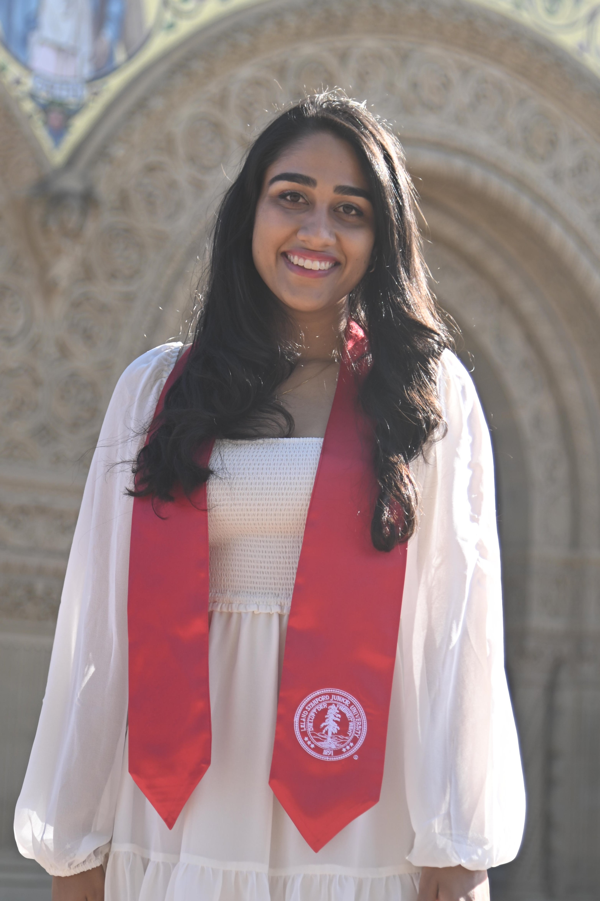
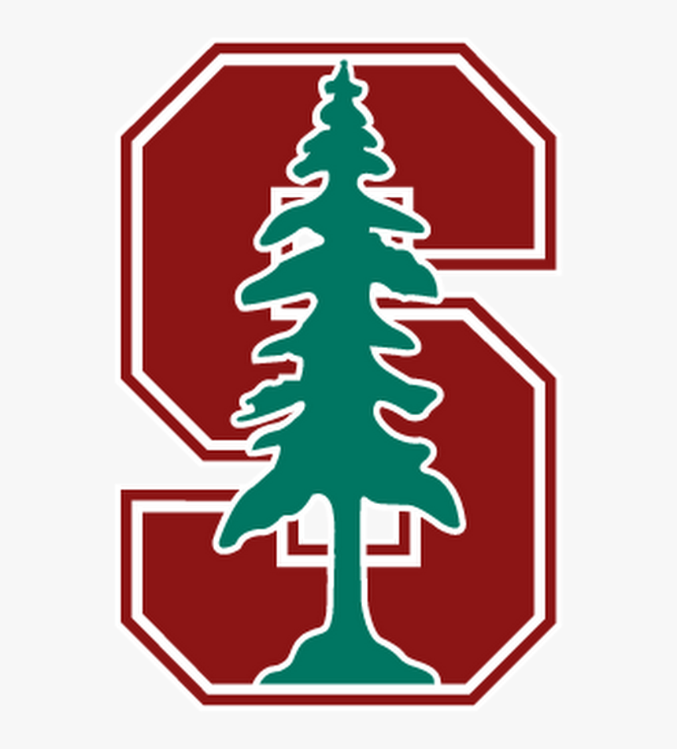
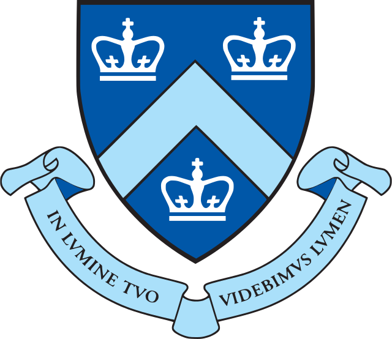
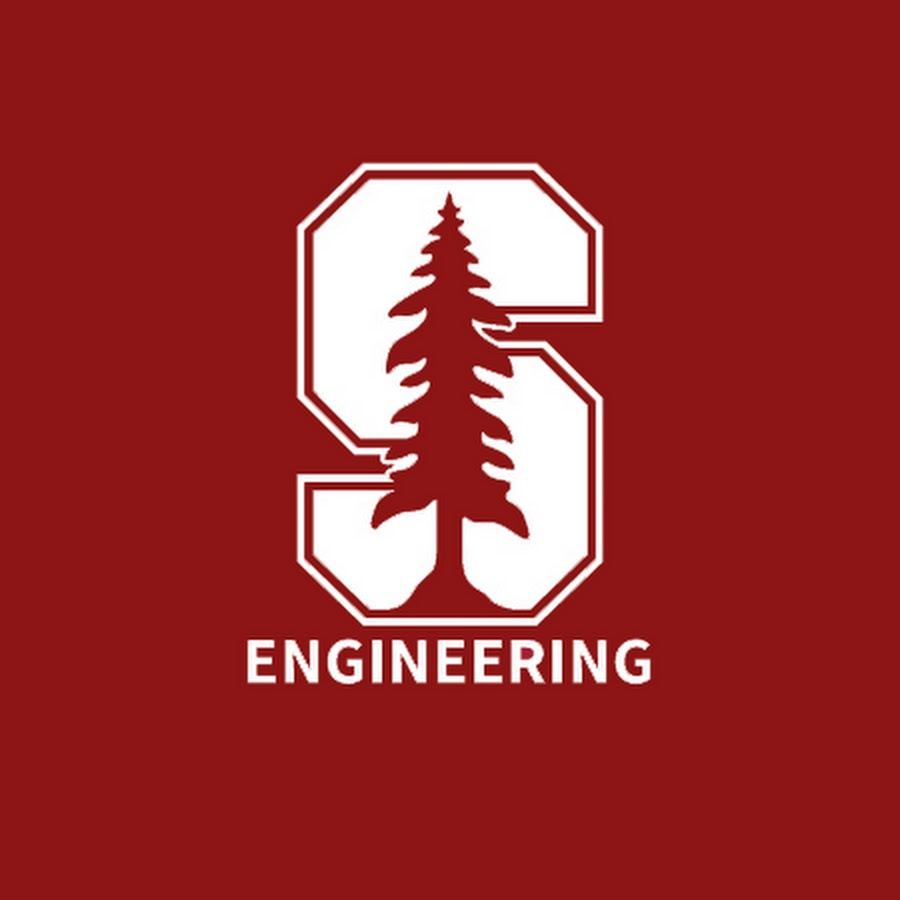
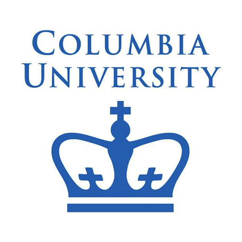

Hi there! I'm a Research Engineer at Scale AI, where I work on evaluations, benchmarking, and reinforcement learning / post-training research to train frontier models with better reasoning capabilities for state-of-the-art agents like browser & computer-use agents. My work has been published at top-tier Machine Learning conference venues such as ICLR, ICML, and NeurIPS. Previously, I was a Research Scientist in the Artificial Intelligence Group (Group 1) at MIT Lincoln Laboratory, where I focused on explainability & trustworthiness research and developing robust evaluation tools for high-stakes applications of Large Language Models (LLMs). Before that, I earned my Master's in Computer Science (Artificial Intelligence track) from Stanford University and my undergraduate degree from Columbia University, where I majored in Computer Science and Physics. I consider myself a generalist, passionate about applying AI to a diverse range of real-world challenges, from astronomy to autonomous vehicles to now agents.
I am fortunate to have worked with many different professors over the course of my academic career. I conducted research in the ILIAD Lab under Prof. Dorsa Sadigh at Stanford, in which I worked on robotic learning using language-conditioned diffusion models, and the Stanford Vision Lab under Prof. Fei-Fei Li and Prof. Jiajun Wu, in which I worked on assembling action, goal, etc. labels for demonstrations for the BEHAVIOR project in robotic simulation benchmarking. As an undergrad, I was supervised by Prof. Daniel Hsu and Prof. Zoltan Haiman on interpreting astrophysical deep learning models for weak lensing using an array of saliency map methods. Before that, in 2019, I first developed my passion for AI at Caltech under Prof. Mansi Kasliwal, creating a real/bogus image classifier for the IR-Gattini telescope, which was later integrated into its data processing pipeline.
My research interests include AI evaluation methodologies, agents, reinforcement learning, and AI safety and alignment.
Everything else: Outside of work, I love dancing (I was Captain of the Columbia Raas dance team), playing the keyboard and exploring the natural landscapes in the Bay Area!


Master's in Computer Science
Graduated in June 2023
Advisors: Dorsa Sadigh (ILIAD Lab), Fei-Fei Li, Jiajun Wu (Stanford Vision Lab)

BA in Computer Science with concentration in Physics
Graduated in May 2021
Advisors: Daniel Hsu, Zoltan Haiman

Graduate Teaching Assistant

Undergraduate Teaching Assistant for Calculus III (across 4 semesters)
Deep Learning, Natural Language Processing, Generative AI, Agents, Reinforcement Learning & Decision Making, Computer Vision, Diffusion Models, Explainability, Robotics, & Graph Neural Networks.